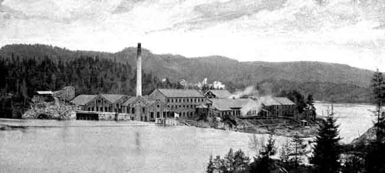
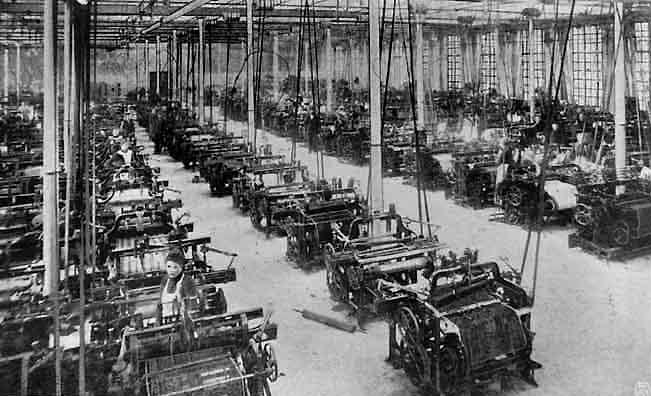
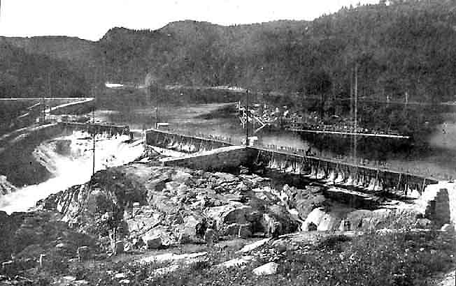

Industri på Agder
Bildene er hentet fra boken "Kristianssands Næringsliv i ældre og nyere Tid" av Overrettsagfører P. Hansen. Den utkom mellom 1902 og 1905 på A. M. Hanches Forlag, Kristiania. Med de originale bildetekstene. - Torvald Slettebø
Evje Nikkelværk
Flaatgrubens 6te etage, 45 meter under dagen
Grubearbeidere
Flaatgrubens Skakt
Garherder
Fosvik Smeltehytte.
Flaatgruben
Diriktørbolig
Laboratorium
Pukkhuset ved Flaatgruben
Blæsemaskinen, Fosvik
Gerhardts Verft.
Gerhardts Verft.
Christianssands Tørdok, Bredalsholmen
Christianssands Tørdok, Bredalsholmen
Gaarden Boen, og Boensfossen.
Boensfossen, med C. Hegermanns Sagbrug og Træsliberi.
A/S Christianssands Møller, Mølle nr, 1. Møllemester Thv. Mortensen.
Mølle nr. 2.
Chefskontor.
Kontoret ved Christianssands Møller.
Christianssands Bryggeri i 1870.
Christianssands Bryggeri.
Expedisjonslokale og Kontorbygning.
Maskinhal. Motor

Koldluftmaskinen
Hunsfos Fabrikers Dam.
Hunsfos Fabriker.
Arbeidere og Funksjonærer ved Hunsfos Fabriker.
Vigeland efter et gammelt Maleri.
Vigelands nuværende Hovedgaard.
Vigelandsfossen og det nye Sagbrug.

Arbeidere og Formænd.
Bestyrerbolig og Trælastoplag
Høie Fabriker: Det gamle Væveri.

Høie Fabriker. Den nye Væveribygning.
Høie Fabriker. Interiør av Vævsalen
Høie Fabriker. Lagerbygningen
John. P. Johnsens Smørfabrik.
Interiør fra John. P. Johnsens Smørfabrik.
Interiør fra John. P. Johnsens Smørfabrik.
A/S Kristianssands Fossefald & Elektricitetsværk. Dambygningerne.
Kraftstationen udvendig med Turbinrør
Kraftstationen invendig
En dag på Børsen.
Børsbygningen.
Norges Banks Bygning.
Christianssands Sparebank.
Ekspeditisjonslokale.
Søndenfjeldske Privatbank.
Søndenfjeldske Privatbank Direktørlokalet.
Søndenfjeldske Privatbank Expeditionslokale.